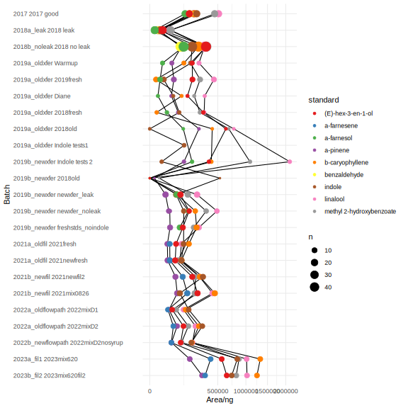
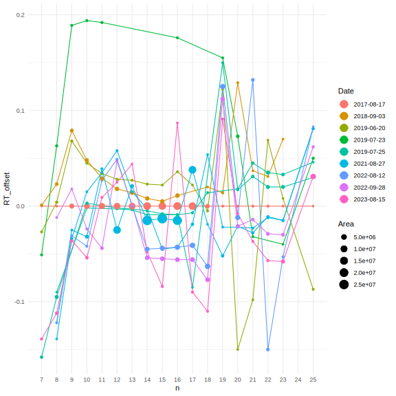

library(tidyverse)
library(reshape2)
library(knitr)
knitr::opts_chunk$set(comment="", cache=T, warning = F, message = F,
fig.path = "images-standards/", dev="svglite", dev.args=list(fix_text_size=FALSE), fig.height=8, fig.width=8)
options(knitr.kable.NA = "")
ggplot2::theme_set(theme_minimal())# source("read_shimadzu.R")
# #grab all the files in the data folder - add new Shimadzu output here and give it 2 digit prefix number
# setwd("~/MyDocs/MEGA/UCI/Schiedea/Analysis/scent/rmbl/Standards/data")
# stds.data <- list.files() %>% set_names() %>% map(read.shimadzu) %>% bind_rows(.id="batch") %>%
# filter(!Filename %in% c("Blank_07192019.qgd"))
# setwd("~/MyDocs/MEGA/UCI/RMBL 2020/RMBL-GCMS/")
# save(stds.data, file = "data/standards_data.rda")
load("data/standards_data.rda")
mix <- deframe(read_csv("data/standards_names.csv")) #combine some compound names
mergedmix <- unique(mix)
stds <- stds.data %>% filter(Name %in% names(mix)) %>%
mutate(Name = factor(recode(Name, !!!mix), levels=mergedmix)) %>%
dcast(Filename~Name, sum, value.var="Area", drop=F) %>%
write_csv("output/standards/standards_qual.csv")
#Import standards_qual.csv into the standards_qual tab of this Google Sheet: https://docs.google.com/spreadsheets/d/1BqdNz8hb_CGbX83Rg8Zr42TPwb4z_JN42Qf_Je4Sz4k/edit#gid=2145192042
#Copy new Filenames to the metadata tab, drag down XLOOKUP in peak area columns
#Add metadata: type notes rundate batch conc replicate year
#Then download the metadata tab to /data and read it back in:
stds.meta <- read_csv("data/shimadzu_standards - metadata.csv") %>% select(-all_of(mergedmix)) %>%
mutate(datebatch = factor(paste(rundate, batch)),
yearbatch = factor(paste(year, batch)) %>% fct_reorder(rundate))
meta.mix <- left_join(stds.meta, stds) #joins the metadata and the peak areas
stds <- meta.mix %>% select(Filename, all_of(mergedmix)) %>% #reorder stds to match stds.meta
column_to_rownames("Filename")
meta.mix.long <- meta.mix %>%
pivot_longer(all_of(mergedmix), names_to="standard", values_to="area") %>%
filter(type=="Standards" |
(standard == "indole" & type == "Indole") | #indole only
(standard == "a-pinene" & type=="PineneOctanone"), #special mix with just these two
!(standard=="benzaldehyde" & year(rundate) > 2018),
!(standard=="a-farnesol" & year(rundate) > 2019),#stopped using these standards
!(standard=="a-farnesene" & year(rundate) < 2021),#started using this standard instead
!(standard == "methyl 2-hydroxybenzoate" & batch=="2021fresh"), #forgot to add standard
!(standard == "indole" & batch=="freshstds_noindole"), #did not add standard
is.na(exclude)) #manually drop particular files - see notes
#TODO look at the rest of these exclusions
# batches_sans_stds <- c("2018 leak", "newxfer_leak", "Diane", "2019fresh","2018old", "Warmup")
# batches_sans_indole <- c(batches_sans_stds, "freshstds_noindole")
# datebatches_sans_stds <- c("2018-09-03 2018 no leak")
# datebatches_sans_indole <- c(datebatches_sans_stds, "2019-06-21 2018fresh", "2017-06-30 2017 good")
#TODO check excluded peak areas in "rmbl/Standards/metadata/regressions_2019_prexfer_filtered.csv"stds.meta %>% count(year, type) %>% pivot_wider(names_from="type", values_from="n") %>%
kable(caption="chromatograms in each year by type")| year | Alkanes | Standards | 3Standards | 4Standards | Indole | Blank | PineneOctanone |
|---|---|---|---|---|---|---|---|
| 2017 | 1 | 19 | |||||
| 2018a_leak | 27 | ||||||
| 2018b_noleak | 6 | 49 | 2 | 10 | |||
| 2019a_oldxfer | 1 | 25 | 5 | ||||
| 2019b_newxfer | 2 | 37 | 1 | 4 | |||
| 2021a_oldfil | 23 | 1 | |||||
| 2021b_newfil | 23 | 1 | |||||
| 2022a_oldflowpath | 22 | 3 | |||||
| 2022b_newflowpath | 1 | 9 | 2 | ||||
| 2023a_fil1 | 9 | 3 | |||||
| 2023b_fil2 | 1 | 9 | 2 |
#3Standards and 4Standards are mixes with low peak areas, not sure which standards they contain
stds.meta %>% filter(!type %in% c("Alkanes","Blank")) %>% count(year, batch, rundate) %>%
kable(caption="chromatograms in each batch (excl. alkanes and blanks)") | year | batch | rundate | n |
|---|---|---|---|
| 2017 | 2017 good | 2017-06-30 | 2 |
| 2017 | 2017 good | 2017-07-10 | 2 |
| 2017 | 2017 good | 2017-07-11 | 3 |
| 2017 | 2017 good | 2017-07-12 | 2 |
| 2017 | 2017 good | 2017-07-13 | 1 |
| 2017 | 2017 good | 2017-07-24 | 5 |
| 2017 | 2017 good | 2017-07-25 | 4 |
| 2018a_leak | 2018 leak | 2018-06-15 | 2 |
| 2018a_leak | 2018 leak | 2018-06-16 | 5 |
| 2018a_leak | 2018 leak | 2018-06-23 | 7 |
| 2018a_leak | 2018 leak | 2018-06-27 | 1 |
| 2018a_leak | 2018 leak | 2018-06-29 | 1 |
| 2018a_leak | 2018 leak | 2018-06-30 | 1 |
| 2018a_leak | 2018 leak | 2018-07-05 | 4 |
| 2018a_leak | 2018 leak | 2018-07-06 | 6 |
| 2018b_noleak | 2018 3mix | 2018-08-12 | 2 |
| 2018b_noleak | 2018 4mix | 2018-08-25 | 2 |
| 2018b_noleak | 2018 4mix | 2018-09-03 | 8 |
| 2018b_noleak | 2018 no leak | 2018-07-12 | 8 |
| 2018b_noleak | 2018 no leak | 2018-07-15 | 4 |
| 2018b_noleak | 2018 no leak | 2018-08-06 | 8 |
| 2018b_noleak | 2018 no leak | 2018-08-07 | 4 |
| 2018b_noleak | 2018 no leak | 2018-08-08 | 3 |
| 2018b_noleak | 2018 no leak | 2018-08-09 | 4 |
| 2018b_noleak | 2018 no leak | 2018-08-18 | 2 |
| 2018b_noleak | 2018 no leak | 2018-08-24 | 12 |
| 2018b_noleak | 2018 no leak | 2018-09-03 | 4 |
| 2019a_oldxfer | 2018fresh | 2019-06-21 | 4 |
| 2019a_oldxfer | 2018old | 2019-06-21 | 2 |
| 2019a_oldxfer | 2019fresh | 2019-06-20 | 10 |
| 2019a_oldxfer | Diane | 2019-06-20 | 3 |
| 2019a_oldxfer | Indole tests1 | 2019-06-21 | 5 |
| 2019a_oldxfer | Warmup | 2019-06-19 | 6 |
| 2019b_newxfer | 2018old | 2019-07-23 | 1 |
| 2019b_newxfer | Indole tests 2 | 2019-07-19 | 4 |
| 2019b_newxfer | freshstds_noindole | 2019-07-25 | 11 |
| 2019b_newxfer | newxfer_leak | 2019-07-23 | 13 |
| 2019b_newxfer | newxfer_noleak | 2019-07-24 | 10 |
| 2019b_newxfer | newxfer_noleak | 2019-07-25 | 2 |
| 2021a_oldfil | 2021fresh | 2021-06-24 | 11 |
| 2021a_oldfil | 2021newfresh | 2021-07-01 | 12 |
| 2021b_newfil | 2021mix0826 | 2021-08-26 | 12 |
| 2021b_newfil | 2021newfil2 | 2021-07-23 | 11 |
| 2022a_oldflowpath | 2022mixD1 | 2022-06-28 | 5 |
| 2022a_oldflowpath | 2022mixD1 | 2022-06-30 | 3 |
| 2022a_oldflowpath | 2022mixD1 | 2022-07-06 | 3 |
| 2022a_oldflowpath | 2022mixD2 | 2022-07-01 | 3 |
| 2022a_oldflowpath | 2022mixD2 | 2022-07-05 | 6 |
| 2022a_oldflowpath | 2022mixD2 | 2022-07-06 | 2 |
| 2022b_newflowpath | 2022mixD2nosyrup | 2022-09-28 | 9 |
| 2023a_fil1 | 2023mix620 | 2023-06-20 | 9 |
| 2023b_fil2 | 2023mix620fil2 | 2023-08-15 | 9 |
walk(mergedmix, function(chem) {
meta.mix.long %>% filter(standard==chem) %>%
ggplot(aes(x=fct_rev(factor(paste(rundate, year, batch))), y=area, color=log10(conc))) +
geom_point(size=2) + geom_line(aes(group=conc)) + coord_flip()+
scale_y_log10() + scale_color_gradient(low="purple",high="orange") +
labs(title=chem, x="Batch", y="Area") + theme(axis.text.y = element_text(hjust=0))
ggsave(filename=paste0("output/standards/area/area_",chem,".svg"), width=8, height=6)
})Regressions are plotted in output/standards/regressions
walk(mergedmix, function(chem) {
meta.mix.long %>% filter(standard==chem) %>%
ggplot(aes(x=conc, group=datebatch, color=year, y=area)) +
scale_x_log10("Concentration (mg/mL)") + scale_y_log10("Area") + #ignores zeros
stat_smooth(method="lm", formula = y~x, se=F, geom="line", alpha=1, size=1) +
geom_point(pch=24, size=2) +
scale_color_brewer("Year", palette="Set3", type="qual") + ggtitle(chem)
ggsave(filename=paste0("output/standards/regressions/regression_",chem,".svg"), width=8, height=6)
})slopes <- meta.mix.long %>%
mutate(mass_ng = conc * 3 * 1000) %>% # concentration in ug/uL * 3 uL * 1000 ng/ug = mass of standard pipetted in ng
group_by(year, yearbatch, batch, type, standard) %>% nest() %>%
mutate(model = map(data, ~ lm(area ~ mass_ng + 0, data=.x)), #force through zero (no intercept)
area_per_ng = map_dbl(model, coef),
ng_per_area = (1/map_dbl(model, coef)),
r2 = map_dbl(model, ~ summary(.x)$r.squared),
n = map_int(data, nrow)) %>%
select(-data, -model) %>%
write_csv("output/standards/regression_slopes.csv")
# ggplot(slopes, aes(x= fct_rev(yearbatch), y = area_per_ng, color=r2)) + facet_wrap(vars(standard), scales="free_x") +
# geom_line(aes(group=standard), color="black") + geom_point(aes(size=n)) + coord_flip() +
# theme(axis.text.y = element_text(hjust=0)) + labs(y="Area/ng", x="Batch")
ggplot(slopes, aes(x= fct_rev(yearbatch), y = area_per_ng, color=standard)) +
geom_line(aes(group=standard), color="black") + geom_point(aes(size=n)) + coord_flip() +
theme(axis.text.y = element_text(hjust=0)) + labs(y="Area/ng", x="Batch") +
scale_color_brewer(palette = "Set1") + scale_y_sqrt()
alkanes <- read_csv("data/alkanes.csv")
source("read_shimadzu.R")
alk.quant <- read.shimadzu.quant("data/alkanes_quant.txt") %>% drop_na(Ret.Time) %>%
filter(!str_detect(Filename,"Adams|Tendeg|10deg|Lad|08122018"), #other GC methods besides Markes Ipo 1.qgm
!Filename %in% c("Alkanes_8262021_13.qgd")) %>% #leaked?
mutate(Name = str_remove(Name, "\\s$"),
date = Filename %>% str_remove("220812") %>% str_extract("[0-9]+20[0-9]+") %>% str_replace("^([1-9]+)","0\\1") %>% mdy()) %>%
left_join(alkanes, join_by(Name)) %>% drop_na(n)
#left_join(summarize(., RT_quant = median(Ret.Time), .by=n))
alk.RT <- alk.quant %>% select(date, Filename, n, Ret.Time) %>% arrange(n) %>% pivot_wider(names_from=n, values_from=Ret.Time) %>%
arrange(date) %>% write_csv("output/alkanes_RT.csv") %>% mutate(date=as.character(date)) %>% as.data.frame()
get_kovats <- function(RT, alkanes_date) {
alk.RT.date <- as.data.frame(t(alk.RT[alk.RT$date==alkanes_date, c(-1,-2)]))
colnames(alk.RT.date) <- "RT_ladder"
alk.RT.date$n = as.integer(rownames(alk.RT.date))
with(alk.RT.date, approx(x = RT_ladder, y = n * 100, xout=RT)$y) #linear interpolation
}
get_RT <- function(kovats, alkanes_date) {
alk.RT.date <- as.data.frame(t(alk.RT[alk.RT$date==alkanes_date, c(-1,-2)]))
colnames(alk.RT.date) <- "RT_ladder"
alk.RT.date$n = as.integer(rownames(alk.RT.date))
with(alk.RT.date, approx(y = RT_ladder, x = n * 100, xout=kovats)$y) #linear interpolation
}
save(alk.RT, get_kovats, get_RT, file="output/get_kovats.rda")
ggplot(alk.quant, aes(x=Ret.Time, y=Filename)) +
geom_rug(sides="b") + geom_text(aes(label=n, color=factor(n))) +
scale_x_continuous(breaks=alkanes$n, minor_breaks = NULL) + guides(color="none")ggplot(arrange(alk.quant, Ret.Time), aes(x=Ret.Time, color=factor(date), y=Area)) +
geom_vline(aes(xintercept=RT_2022), color="grey") +
geom_text(data=alkanes, aes(x=RT_2022, y=1e8, label=n), color="black")+
geom_path(aes(group=Filename)) + geom_point(size=2) + geom_rug(sides="b") +
scale_y_log10() + guides(color = guide_legend("Date", override.aes = list(size = 5)))alk.quant %>% left_join(filter(.,Filename=="Alkanes3uL0.01_08172017.qgd") %>% select(n, RT_quant = Ret.Time)) %>% #missing C6 and C25
mutate(RT_offset = Ret.Time - RT_quant,
Filename = fct_reorder(Filename, -RT_offset, .fun=median)) %>%
arrange(Ret.Time) %>% drop_na(RT_quant) %>%
ggplot(aes(x=n, y=RT_offset, color=factor(date))) +
geom_path(aes(group=Filename)) + geom_point(aes(size=Area)) +
scale_x_continuous(breaks=alkanes$n, minor_breaks = NULL) +
guides(color = guide_legend("Date", override.aes = list(size = 5)))
ggplot(alk.quant, aes(x=n, y=Ret.Time, color=factor(date))) +
geom_line(size=0.3) + geom_point() +
scale_x_continuous(breaks=alkanes$n, minor_breaks = NULL) + guides(color = guide_legend("Date", override.aes = list(size = 5)))#qual integrations not very reliable, use quant instead (above)
#alkanes <- read_csv("data/alkanes.csv") %>% select(-RT_kmeans)
alk.data.name <- alkanes %>% left_join(stds.data, join_by(Name)) %>% select(-Synonyms) %>%
filter(str_detect(Filename, "Alk|ALK"), Ret.Time > 2, Ret.Time < 19.5) %>% #C6-C18
mutate(gc_method = str_extract(Filename,"Adams|Tendeg") %>% replace_na("Ipo")) %>% filter(gc_method=="Ipo") %>%
mutate(date = Filename %>% str_extract("[0-9]+20[0-9]+") %>% str_replace("^([1-9]+)","0\\1") %>% mdy(),
n.kmean = kmeans(Ret.Time, centers = alkanes %>% filter(n>=6, n<=18) %>% pull(RT_2022))$cluster + 5)
alkanes <- alkanes %>% select(-any_of("RT_kmeans")) %>%
left_join(alk.data.name %>% group_by(n.kmean) %>% summarize(RT_kmeans = median(Ret.Time)), join_by(n==n.kmean)) #%>%
#write_csv("data/alkanes.csv")
alk.data <- alk.data.name %>% select(-any_of(colnames(alkanes))) %>% left_join(alkanes, join_by(n.kmean==n))
ggplot(alk.data, aes(x=Ret.Time, y=Filename)) +
geom_rug(sides="b") + geom_text(aes(label=n.kmean, color=factor(n.kmean))) +
scale_x_continuous(breaks=alkanes$n, minor_breaks = NULL) + guides(color="none")
ggplot(alk.data %>% rename(n=n.kmean), aes(x=Ret.Time, color=factor(date), y=Area)) +
geom_vline(data=alkanes, aes(xintercept=RT_kmeans), color="grey") +
geom_text(data=alkanes, aes(x=RT_kmeans, y=2e8, label=n), color="black")+
geom_line(aes(group=Filename)) + geom_point(size=2) + geom_rug(sides="b") +
scale_y_log10() + guides(color="none")
alk.data %>% mutate(RT_offset = Ret.Time - RT_2022,
Filename = fct_reorder(Filename, -RT_offset, .fun=median)) %>%
ggplot(aes(x=n.kmean, y=RT_offset, color=factor(date))) +
geom_line(aes(group=Filename)) + geom_point(aes(size=Area)) +
scale_x_continuous(breaks=alkanes$n, minor_breaks = NULL)
ggplot(alk.data, aes(x=n.kmean, y=Ret.Time, color=factor(date))) +
geom_line(size=0.3) + geom_line(data=drop_na(alkanes, RT_2022), aes(x=n, y=RT_2022), color="black") + geom_point() +
scale_x_continuous(breaks=alkanes$n, minor_breaks = NULL)
#See if there are misidentified alkane peaks - not many
alk.data.all <- stds.data %>% filter(str_detect(Filename, "Alk|ALK"), !str_detect(Filename,"Adams|Tendeg"),
Ret.Time > 2, Ret.Time < 19.5, Height > 8e5)
ggplot(alk.data.all, aes(x=Ret.Time, y=Height, color=Filename,
shape=ifelse(Name %in% alkanes$Name, "Alkane",
ifelse(Name=="", "No ID","Not alkane")))) +
geom_point() + geom_line() + geom_rug(sides="b") + geom_text(aes(label=Name)) +
scale_x_continuous(breaks=1:26) + scale_shape_manual("Alkane", values=c(19,4,1)) + scale_y_sqrt()
alk.data.all %>% count(Name) %>% filter(!Name %in% alkanes$Name, n>1) %>% arrange(desc(n))